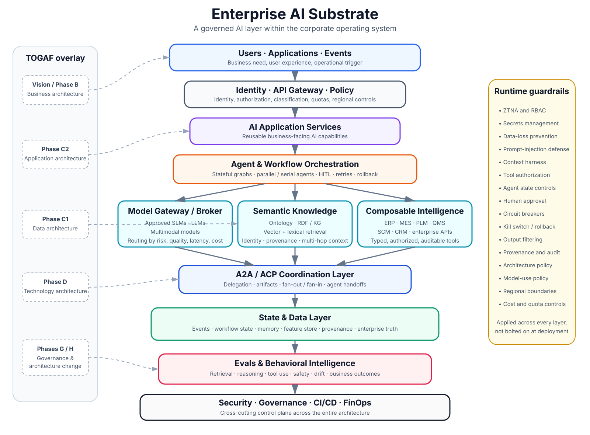

Enterprise AI Substrate
A governed AI layer within the corporate operating system.
Toyota does not need a collection of disconnected AI pilots. It needs a governed AI substrate that allows models, enterprise knowledge, agents, and operational systems to participate safely in the corporate operating system.

Walkthrough
1. Begin with the business process
Users, applications, or enterprise events initiate the workflow. Define the business outcome, decision rights, accountability, and acceptable autonomy before selecting a model.
2. Govern access and context
Identity, API management, policy, data classification, and authorization determine what the AI system may know and do.
3. Expose reusable AI application services
Quality investigation, maintenance diagnostics, supplier analysis, engineering knowledge, and document intelligence should be reusable services rather than isolated prompts.
4. Orchestrate agents and workflows
Use explicit workflow state, branching, fan-out and fan-in, human approval, retries, rollback, and safe exception paths.
5. Separate the three forms of intelligence
A model broker governs model access; semantic knowledge provides ontology, RDF/KG, and vector retrieval; composable intelligence provides controlled access to ERP, MES, PLM, QMS, SCM, CRM, and APIs.
6. Coordinate agents through A2A / ACP
Protocol interoperability carries tasks and artifacts. The ontology supplies shared meaning. The state layer preserves durable workflow truth and provenance.
7. Evaluate the whole decision system
Measure retrieval, reasoning, tool execution, policy adherence, latency, cost, drift, human acceptance, and business outcomes—not merely fluency.
8. Apply TOGAF as the enterprise lifecycle
Business Architecture defines why the system acts; Phase C defines logical data and application capabilities; Phase D selects the approved technology stack; Phases G and H govern conformance and change.
Closing line
The objective is not to deploy an isolated agent. It is to make AI a governed, observable, and replaceable participant in Toyota's existing enterprise architecture.